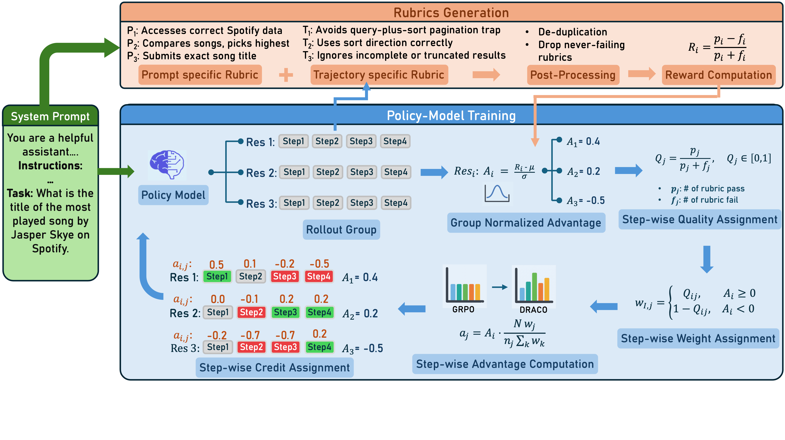
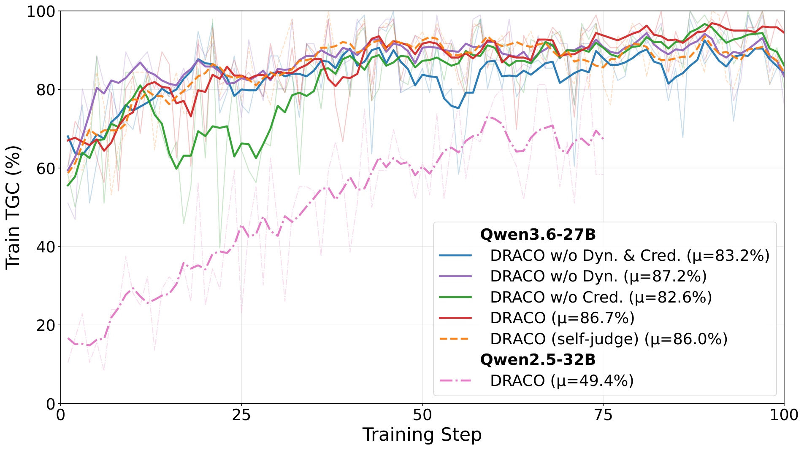

DRACO: Dynamic Rubrics + Closed-Form Step Credit for Outcome-Blind Agent RL
Paper: "DRACO: Fine-Grained Credit Assignment with Dynamic Rubrics for Long-Horizon Agent Training" (arXiv 2609.04094, Sep 3 2026). Authors: Shubham Gandhi, Saurabh Goyal, Kiran Kate, Yara Rizk.
TL;DR
- DRACO trains long-horizon agents with GRPO in the outcome-blind setting — no verifier, no unit tests, no gold answers in the reward. A judge writes a fresh rubric per task per training step (proposed from the instruction, extended by what each rollout actually reveals), scores each trajectory criterion-by-criterion, and the pass/fail rate becomes the reward.
- Its second contribution is a closed-form, sign-preserving credit-reallocation rule: the judge's verdicts cite the steps responsible, and the trajectory's GRPO advantage is redistributed over those steps in proportion to their cited quality — conserving the trajectory's total gradient push exactly, with no trained attribution module.
- On AppWorld (Qwen3.6-27B), DRACO lifts test-normal TGC/SGC from 69.4/41.1 to 85.3/70.6, beats GRPO trained with the ground-truth sparse reward by 5.3 points, and transfers zero-shot to τ-bench Banking (15.8→20.4) — while the biggest gains are in consistency (pass³ TGC +25.2 points vs only +3.9 on pass@3).
Why this matters
RLVR works where a programmatic checker exists; most long-horizon agent domains have none, and building verifiers is exactly the bottleneck flagged across this tracker (see The Verifier Bottleneck). The standard fallback — a single trajectory-level rubric score — has two structural problems this paper attacks at once. First, a static rubric written for the whole task distribution can only contain generic criteria ("handle pagination", "don't leak secrets"), so it stops discriminating as the policy improves. Second, a single scalar spread uniformly over tens of steps is a terrible learning signal: GRPO pushes every token of a winning trajectory equally, including the flailing detours, and suppresses every token of a losing one, including the good recovery steps.
The interesting design choice is where DRACO puts the intelligence: the judge's language-level work (write criteria, cite steps) is reused as the numeric credit structure through pure closed-form bookkeeping. No learned reward model, no value network, no trained attribution — so the machinery stays auditable, and the reward can't drift from what the judge actually asserted. For anyone doing agentic RL where "did it work?" is expensive but "what should good behavior look like here?" is cheap to elicit, this is a clean recipe.
The core idea

Figure 1 from the paper: top — rubric generation (prompt-specific criteria + trajectory-specific criteria, deduplicated, never-failing criteria dropped, reward \(R_i=(p_i-f_i)/(p_i+f_i)\)); bottom — GRPO group-normalizes rewards into \(A_i\), step qualities \(Q_j\) become sign-dependent weights \(w_j\), and step advantages \(a_j\) replace the uniform \(A_i\).For each task, a judge proposes criteria from the instruction alone, then extends them once per sampled rollout — adding the sub-goals that rollout reveals and the failure modes the policy actually exhibits. Proposals from all \(G\) rollouts merge into one deduplicated set \(\mathcal{R}=\{c_1,\dots,c_K\}\), kept mutually exclusive and collectively exhaustive. Discriminative dropout then keeps a criterion only if some group member failed it (a criterion everyone passes carries no gradient information and would dilute the rate). A frozen external judge scores every trajectory against every surviving criterion — pass, fail, or not-applicable, plus a justification and the steps responsible. With \(p_i\), \(f_i\) counting trajectory \(i\)'s applicable passes and fails:
with \(R_i=0\) if nothing applies. Normalizing by verdicts cast (not by \(K\)) keeps trajectories with different applicable-criteria counts comparable within the group. No task-success term appears anywhere — the reward is fully outcome-blind.
How it works
GRPO standardizes rewards within the group into a trajectory advantage \(A_i=(R_i-\mathrm{mean}(\{R_j\}))/\mathrm{std}(\{R_j\})\) and, in its vanilla form, applies that same scalar to every token. DRACO replaces it with a per-step advantage. Steps are agent turns (one emitted code block); tokens in "gaps" (turn glue, tool-result echoes) get no credit. Let \(p_j, f_j\) count the passed/failed criteria whose verdicts cite step \(j\). The step quality is the pass fraction of citing criteria:
with uncited steps inheriting the mean \(\bar{Q}\) over cited ones. Sign-preserving weights flip the reading depending on whether the trajectory is being reinforced or suppressed:
and the step advantage, applied to every token of step \(j\) (with \(n_j\) tokens in step \(j\), \(N=\sum_k n_k\)):
Two properties make this rule trustworthy. It conserves total push: \(\sum_j n_j a_j = A_i N\), exactly what baseline GRPO applies to the same tokens — credit is moved, never inflated. And since \(w_j\ge 0\), no step's advantage ever flips sign against the judge's trajectory-level verdict. Each step's total contribution \(n_j a_j \propto w_j\) is independent of its length, so a step earns influence by being judged good, not by being verbose. If the rubric cites no steps, the update degrades gracefully to plain GRPO.
DRACO training step:
for each task x in batch (B=16):
sample group of G=6 trajectories from policy
# rubric generation (3 stages, judge = GPT-5.4)
R ← criteria proposed from instruction x
for each trajectory τ_i: R ← R ∪ criteria revealed by τ_i
dedupe R; drop criteria that no group member failed
# scoring
for each τ_i: judge scores every c ∈ R → pass/fail/NA + step citations
R_i = (p_i − f_i)/(p_i + f_i)
A_i = (R_i − mean)/std # GRPO group normalization
# closed-form credit reallocation
for each step j: Q_j = p_j/(p_j+f_j) (uncited → mean Q)
w_j = Q_j if A_i ≥ 0 else 1−Q_j
a_j = A_i · N·w_j/(n_j·Σ_k w_k) # conserves Σ n_j a_j = A_i N
policy-gradient update with per-token advantages a_j (LoRA)
Setup: policy Qwen3.6-27B (ablations) and Qwen2.5-32B-Instruct, LoRA + GRPO on AppWorld's 90 training tasks, judge GPT-5.4 at temperature 0.1 for all reward operations, 8×H100. Ablations remove dynamic rubrics, step credit, or both; an outcome reward model trained on AppWorld unit tests serves as the outcome-aware reference.
Results
On AppWorld test-normal (168 tasks), Qwen3.6-27B goes from 69.4/41.1 TGC/SGC to 85.3/70.6 (+15.9/+29.5); test-challenge TGC 49.7→61.5. The consistency story is the standout: pass³ TGC rises 25.2 points (47.6→72.8) while pass@3 rises only 3.9 — the base model could often solve tasks once; DRACO makes success repeatable. Zero-shot transfer to τ-bench Banking (trained only on AppWorld, no verifier ever) improves success 15.8→20.4. On Qwen2.5-32B-Instruct the gains are larger (TGC/SGC 35.7/17.3→62.9/42.3), closing most of the distance to SALT (66.2/47.9), which uses the ground-truth reward.

Figure 7 from the paper: task goal completion on the training tasks across steps (post-hoc diagnostic — TGC is never part of the reward).The appendix analysis explains why dynamic beats static: over 99 training steps the judge wrote 6,245 distinct criteria (60,119 judgments); 84.4% of criteria are written for a single task ("deduplicates artists before follow", "approved all and only eligible requests") — sub-goals no shared rubric could express — while the 18 criteria recurring across ten-plus tasks turn out to be the static rubric rediscovered. DRACO's rollouts also recover 91.3% on a static held-out rubric set it never trained on.
How it connects
DRACO sits at the junction of two tracker threads. On credit assignment, it's the outcome-blind counterpart of TRACE: Turn-Level Rewards for Long-Horizon Agents, GiGPO's group-in-group step advantages, SP3O's segment preferences, and Apodex's sparse-terminal-reward decomposition — but where those learn or infer attribution, DRACO extracts it for free from judge citations. On rubric rewards, it operationalizes what TAHI does with human feedback and what AutoSciRub/CalibratedRubric do for evaluation, and the "discriminative dropout" move is a within-group cousin of Rubric Dropout's anti-reward-hacking motivation. The verifier-free framing answers directly to The Verifier Bottleneck and complements RLSVR's task-transformation route to self-verifiable rewards: RLSVR manufactures verifiability, DRACO abandons it and buys signal with judge structure instead.
Critical take
The elephant: GPT-5.4 does all rubric work at training time, and Figure 8's cost accounting plus the self-judge ablation show the frozen frontier judge matters — the policy scoring itself (even with thinking and 3-vote scoring) is a weaker substitute. So "no verifier" is not "no oracle"; it swaps a programmatic oracle for a strong-model oracle, and the economics only favor DRACO where checkers are genuinely unbuildable. Second, reward hacking is held off by design choices (MECE criteria, discriminative dropout, a frozen judge) but only 90 training tasks and ~100 steps of LoRA training were run; longer horizons with a policy that learns to write judge-pleasing trajectories are untested — the emergent-cheating literature suggests that pressure will find cracks. Third, credit precision inherits judge citation quality wholesale: a criterion mis-cited to the wrong step moves real gradient to the wrong turn, and there's no consistency check on citations. Finally, the closed-form rule redistributes only within a trajectory under GRPO's group baseline — it cannot express "this step was good in a trajectory whose advantage is zero because the whole group tied," a regime the appendix itself flags (unanimous rollouts stop discriminating between steps).
If you remember three things
- You can train long-horizon agents with zero outcome signal: rubric pass-rate rewards \(R_i=(p_i-f_i)/(p_i+f_i)\) from a frozen judge beat GRPO on ground-truth sparse rewards on AppWorld (+5.3), mostly by making success consistent (pass³ +25.2).
- Rubrics must be dynamic and per-trajectory: 84% of useful criteria are single-task sub-goals a static rubric cannot contain, and dropping never-failed criteria keeps the reward discriminative as the policy improves.
- Judge step-citations → closed-form credit: \(a_j = A_i\, N w_j / (n_j \sum_k w_k)\) reallocates the trajectory's advantage onto implicated steps while conserving total push and never flipping sign — dense credit with no trained attribution module.